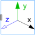
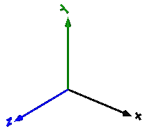

FixedFrameVisualizing a coordinate system including axes labels (visualization data may vary dynamically) |

|
Information
This information is part of the Modelica Standard Library maintained by the Modelica Association.
Model FixedFrame visualizes the three axes of
its coordinate system frame_a together with appropriate axes
labels. A typical example is shown in the following figure:

The sizes of the axes, the axes colors and the specular coefficient (= reflection factor for ambient light) can vary dynamically by providing appropriate expressions in the input fields of the parameter menu.
Parameters (2)
| animation |
Value: true Type: Boolean Description: = true, if animation shall be enabled |
|---|---|
| showLabels |
Value: true Type: Boolean Description: = true, if labels shall be shown |
Inputs (6)
| length |
Default Value: 0.5 Type: Distance (m) Description: Length of axes arrows |
|---|---|
| diameter |
Default Value: length / world.defaultFrameDiameterFraction Type: Distance (m) Description: Diameter of axes arrows |
| color_x |
Default Value: Modelica.Mechanics.MultiBody.Types.Defaults.FrameColor Type: Color Description: Color of x-arrow |
| color_y |
Default Value: color_x Type: Color Description: Color of y-arrow |
| color_z |
Default Value: color_x Type: Color Description: Color of z-arrow |
| specularCoefficient |
Default Value: world.defaultSpecularCoefficient Type: SpecularCoefficient Description: Reflection of ambient light (= 0: light is completely absorbed) |
Connectors (1)
| frame_a |
Type: Frame_a Description: Coordinate system in which visualization data is resolved |
|---|
Components (10)
Used in Examples (1)
|
Modelica.Mechanics.MultiBody.Examples.Loops One kinematic loop with four bars (with UniversalSpherical joint; 1 non-linear equation) |